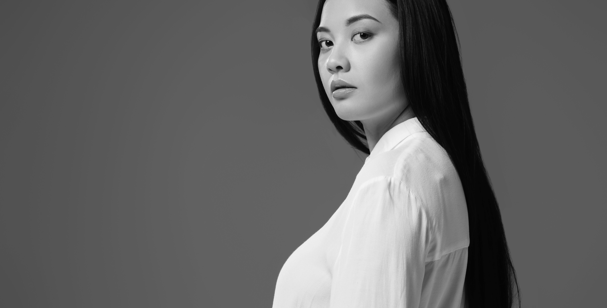

FEMALE WORKERS IN INDONESIA EARN 23% LESSER THAN THEIR MALE PEERS
Women in Indonesia earn less money on average per month than men as the gender pay gap stood at nearly 23 percent in February, official data show, as female workers face undervalued work and inflexible working conditions.
Women earned on average Rp 2.45 million (US$166.39) per month in February, marking an annual increase of 5 percent, according to survey data from Statistics Indonesia (BPS). Men earned higher on average at Rp 3.18 million per month, an increase of 4.3 percent over the same period.
The inequality has slightly narrowed as the gender pay gap, the difference between the average wages of men and those of women as a percentage of men’s wages, was slightly higher at 23.44 percent in the same month last year. However, the wage gap has not improved very much from the level seen in February 2010 at 23.64 percent.
The gender pay gap was estimated at 16 percent at the global level, according to a news release from the International Labor Organization (ILO) and the United Nations Entity for Gender Equality and the Empowerment of Women (UN Women).
“Unless we address the systemic inequalities that put women in low paid, undervalued work and inflexible working conditions that limit their opportunities, we will not be able to close the gender pay gap,” Jamshed Kazi, UN Women Indonesia representative and liaison to ASEAN, was quoted in the news release as saying on Thursday.
The wage disparity exacerbates the uneven impact of the COVID-19 pandemic on women, since most of them work in hard-hit industries such as accommodation, food and beverages, sales and manufacturing.
Women have also been disproportionately affected as most of them work in the informal and underpaid sectors. Less than half of them work as professionals, according to an estimate from the Finance Ministry.
While other factors like educational background may play a role, most studies consider discrimination the stronger factor driving the wage inequality between men and women, Diahhadi Setyonaluri, an economist at the Demographic Institute at the University of Indonesia (UI), has said.
Men had a better chance of climbing the career ladder in part because there were “implicit problems” embedded in job promotion, Diahhadi added.
Women, for example, tended to turn down promotion offers that would move them from their current city when their children were already attending school and their husband worked there, she said.
“Imagine if there was zero gender wage gap, there would be additional income,” Diahhadi told The Jakarta Post in a phone interview on Friday.
“The easiest way to see it is to consider its impact on the national income or economic growth. With no wage inequality, our economic growth may increase by several percentage points,” she added.
The ILO Indonesia stated that “education alone does not close the gender pay gap.” Among university graduates, women earned 31.9 percent less than their male counterparts, according to BPS data.
Aviliani, an economist at the Institute for Development of Economics and Finance (Indef), said Friday the wage gap was smaller for higher managerial positions, for which the wage was based more heavily on skills.
Women in high managerial positions earn on average Rp 5.9 million every month and men Rp 7.23 million, according to BPS data. The difference is a wage gap of 18.31 percent, slightly below the overall wage gap.
“Women in lower positions tend to think about their family first regardless of the pay they receive, while men tend to negotiate,” Aviliani told the Post in a phone interview.
Manpower Minister Ida Fauziyah said Indonesia still considered wage equality between men and women important since the country ratified in 1958 the ILO Convention on Equal Remuneration.
“Given the gender gap in our labor market today, my ministry, together with all of our social partners and international organizations, continues to reinforce our joint actions against gender-based discrimination at work. It is time for women and men to be equally appreciated by their talents, work results and competence, not by their gender,” Ida was quoted in the news release as saying.
Closing the gender wage gap can be achieved by emphasizing the important role trade unions can play, according to Elly Silaban, the president of the Confederation of All Indonesian Labor Unions (KSBSI), and Yorrys Raweyai, the general chairman of the All Indonesian Workers Union Confederation (KSPSI).
“We need to increase the representation of women in decision-making roles and the involvement of women in wage-setting mechanisms and negotiation. Women should be able to represent and speak for themselves,” Elly was quoted in the news release as saying.
By Dzulfiqar Fathur Rahman. The Jakarta Post.
Jakarta / Mon, September 21, 2020 / 08:45 am
Source: Jakarta Post
WIDEST GENDER PAY GAP IN OECD SET TO WORSEN WITH PANDEMIC
South Korea has long lagged other developed countries in promoting equal pay between women and men, and the small progress it has made in recent years is facing a setback as the Covid-19 shock disproportionately hits female workers.
South Korean women took home 32.5% less income than men last year -- the widest pay gap among 37 member countries in the Organisation for Economic Co-operation and Development, where the average gap is 13%. The disparity risks getting worse this year. Women account for two thirds of the country’s job losses since March as the pandemic hits service-sector and non-regular jobs, where women vastly outnumber men.
Some have held on to their jobs but suffered wage cuts, such as Park Myeong-soon, a 64-old female cleaner at a university in the South Korean city of Incheon. The virus outbreak has meant fewer in-person classes and rotation shifts to reduce infection risk among the cleaners. This has brought less work and reduced pay for Park.
“This is a big problem for people like me who live paycheck to paycheck,” she said by phone. “It is the most stressful time and I fear this Covid situation is going to last longer.”
The vulnerability of female workers amid the pandemic is not unique to South Korea. The situation isn’t much better in Japan, where women have accounted for a majority of the jobs lost since the outbreak, while also bearing the burden of rearing homebound children. In the U.S., this crisis has been described as a “shecession” for its greater impact on women.
Unequal South Korea’s gender wage gap is worst in OECD.Source: OECD
* Difference between median earnings of men and women relative to those of men
Yet it’s particularly painful for South Korea, which had been making headway in attracting more women into the workforce by promoting policies such as flexible work hours and paid parental leave.
Before the pandemic struck, women had outpaced male jobs gains since 2015. The gender pay gap had narrowed from 37.2% over the same period.
Worse Jobs
It remains uncertain whether the jobs women lost will be
restored as the economy recovers, with Covid-19 reshaping
the way businesses operate.
“Women are the first to take a hit when there’s an economic crisis from the Asian financial crisis to Covid-19,” Bae Eun-kyung, a sociology professor at Seoul National University, said at a forum this month. “And when the jobs situation improves, women again end up taking worse jobs than men.”
The OECD said in its South Korea economic survey in August that the Covid-19 crisis is exacerbating the country’s inequalities. It suggested the government regularly publish its analysis of wages outcomes to achieve fairer pay across genders.
The collapse in female jobs in South Korea is due their outsized presence in face-to-face service positions, as well as in non-regular positions more prone to lay-offs. Around 31% of the country’s female workers held services or sales jobs last year, almost double the share of men.
Even among those holding similar jobs -- like Park the cleaner and her male co-workers -- the common gender division of labor has impacted her female colleagues more as the virus rages.
Park said in her university, men worked outside, cleaning parking lots and lawns, while women mostly cleaned indoor bathrooms and classrooms. She said this has meant men were saved from being split into rotation groups to reduce infection risk and experienced no wage cut.
Government Policy
South Korea’s gender situation lags its status as the home to
some of the world’s most advanced companies, such as
Samsung Electronics Co. and SK Hynix Inc.
The gap remains wide in leadership positions. The share of women holding managerial posts in state-funded and large private companies was 19.8% last year, down from 20.6% in 2018, statistics office data show. South Korean women hold just 19% of assembly seats, below the global average of 25% in data compiled by the Inter-Parliamentary Union.
Much of the government’s stimulus this year, including the proposed fourth extra budget, has focused on protecting vulnerable jobs and workers, but hasn’t done much in resolving gender inequality.
“Governments may provide support for each sector but they find it difficult to do so for a specific gender, because job choices were individual,” said Joseph Han, an economist at the Korea Development Institute.
By Sam Kim
September 12, 2020, 4:00 AM GMT+8 Updated on September
14, 2020, 4:00 AM GMT+8
Source: bloomberg